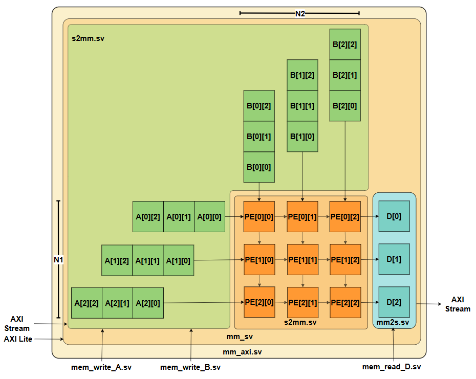
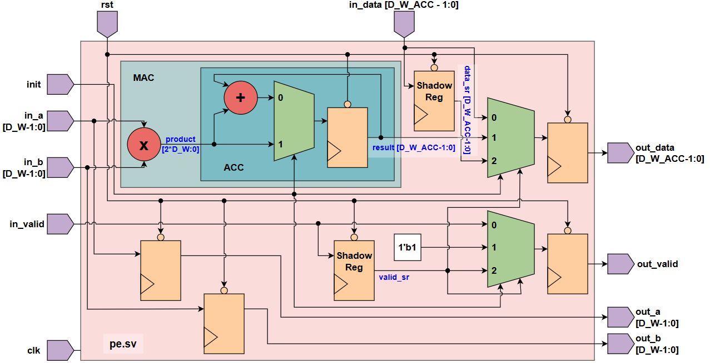

Gianna Binder
Electrical Engineering Student, University of Waterloo
RTL Design, Computer Architecture, and AI Hardware Acceleration
PROJECTS

5-STAGE Pipelined RISC-V CPU (RV32I)
- Architected a 5-stage scalar pipeline with custom decode logic, a unified register file, and an integer ALU; optimized RTL for BRAM resource mapping onto a Xilinx FPGA to minimize logic utilization.
- Eliminated pipeline stalls via MX/WX/WM forwarding paths and implemented branch-taken prediction with single-cycle flushing to maintain high IPC.
- Performed Static Timing Analysis to achieve timing closure for bitstream generation and deployment.
- Validated ISA compliance with a provided test environment, utilizing GTKWave/Verilator for deep-trace debugging of pipeline control and data flow


IBERT TRANSFORMER AI ACCELERATOR
- Implemented a parallelized systolic array architecture with custom Processing Elements to optimize matrix multiplication for integer-only transformer inference.
- Developed hardware-optimized SystemVerilog modules for activation functions, including GELU, Softmax, and Multiply-Accumulate units.
- Executed memory read/write interfaces using AXI-Stream, FIFO buffers, and shift registers to orchestrate cycle-accurate data movement and maximize throughput.
- Achieved 100MHz timing closure on a PYNQ-Z1 target by balancing arithmetic pipeline depth and DSP slice utilization for bit-accurate inference.
TECHNICAL SKILLS
HDLs/Tools: SystemVerilog/Verilog, Cadence Virtuoso, Intel Quartus, Vivado, Lint, Synopsys Verdi/VC Formal, Verilator
Methods: UVM, STA, Lint, P&R
Systems & Scripting: Git, Linux, Python, C++, Tcl, Bash, MATLAB
Protocols & Standards: RISC-V, PCIe Gen3/4, AXI4/APB, Ethernet (TSN), ARM Assembly